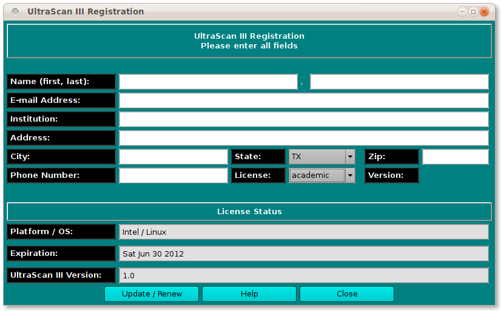

Registration / License Update Panel:

The registration control panel allows UltraScan III
registration or update of a license. The contact fields should be filled
out completely and then the Update / Renew button clicked.
If you are registering for the first time, you will be sent an e-mail
with instructions for completing the registration process. If you are
simply updating information, the process is complete after
Update / Renew.
This panel is self-explanatory. For completeness, the GUI options
are detailed below. Be sure to fill out all text boxes.
-
Name (first, last): Fill in your first and last name.
-
E-mail address: Give your best contact e-mail address.
-
Institution: Fill in the institution or company at which
you will be using UltraScan III.
-
Address: Fill in address number and street.
-
City: Give your city name.
-
State: Select your state.
-
Zip: Fill in the postal zip code.
-
Phone Number: Give your best contact telephone number.
-
License: Enter the license type you desire: academic
or commercial.
-
Update / Renew When all the above fields are complete,
click this button to complete the registration or update.
-
Help See this documentation.
-
Close Exit the registration dialog.
 Manual
Manual